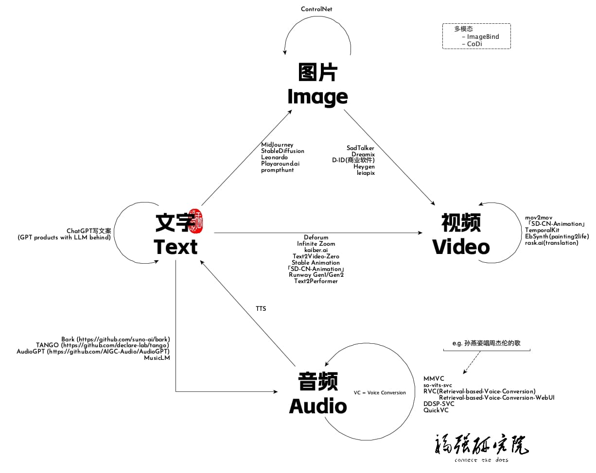

福强AI课堂Stable Diffusion系列结课啦～
王福强
2023-06-02

截至2023年五月最后一天，福强AI课堂(https://edu.afoo.me) 全新创作的Stable Diffusion系列课程已经完成，加上之前的ChatGPT内容，已经直奔500分钟而去，我们始终相信，如果说MidJourney是为小白素人准备的图片生成神器，那么Stable Diffusion则一定是设计与摄影专业人士手中的大宝剑，善假于器才能在新的时代里披荆斩棘，精品，一定是非标准化作业的产物，这种灵活度，只有Stable Diffusion才能给你 ；）
知其然，知其所以然，二者并重，方为上手！这也是整个系列的内容“从理论到实践”始终坚持的一贯宗旨。
福强AI课堂 Stable Diffusion系列课程内容现包含：
- Stable Diffusion入门
- Stable Diffusion进阶
- Intro to Stable Diffusion (什么是Stable Diffusion）
- How Stable Diffusion Works （Stable Diffusion原理与分析）
- How to figure out what kind of model do（Stable Diffusion的各种Model类型如何区分和使用）
- How to customize models?（如何定制Stable Diffusion的模型）
- is there any better models? （有没有比Stable Diffusion更好的模型）
- Product ecosystem of stable diffusion （Stable Diffusion产品生态介绍与分析）
- Auto1111 Stable Diffusion WebUI deep intro （深入了解Auto1111 Stable Diffusion WebUI）
- How to be a prompt engineer? （如何成为一名合格的prompt工程师）
- Commercial scenarios & applications （Stable Diffusion的商业场景及应用）
- ComfyUI从入门到精通
- 什么是ComfyUI
- 了解Node产品设计
- 了解Block产品设计
- 对比ComfyUI与Automicatic1111 WebUI
- 安装与运行
- 基础用法
- 架构解析
- 高级用法
- Img2Img
- unCLIP
- Upscale
- Hires Fix
- Inpaint & Outpaint
- LoRA
- Textual Inversion
- ControlNet
- 多区块长图片拼接与生成
- Grid与XYZ Plot
- 自定义扩展
- 产品化与商业化思考
- 参考阅读
- 什么是ComfyUI
- 如何训练LoRA模型
- 垂直行业场景案例展示
- LoRA模型概念与原理回顾
- LoRA模型训练过程讲解
- lyCORIS模型介绍
- LoRA模型训练实操演示
- Q&A
- 深入浅出ControlNet
- 什么是ControlNet
- T2I Adaptor附带讲解
- ControlNet架构讲解
- ControlNet 14种模型深入详细讲解
- ControlNet的使用原则与场景探讨
- Q&A
- Inpainting与Outpainting
- 什么是Inpainting或者Outpainting?
- Inpainting主要解决什么问题
- Inpainting实操演示
- Inpainting相关参数详解
- Inpainting与AIGC精品创作流程与最佳实践
- Outpainting常见思路与实践
- 关于Inpainting模型的必要补充
- Q&A
- LatentCouple与组合一体化生成
- Latent Couple的起源（介绍三种概念之间的密切关系）
- Composable Diffusion
- Latent Couple
- Composable LoRA
- Regional Prompter与LatentCouple的异同
- LatentCouple相关参数详解
- LatentCouple辅助工具
- LatentCouple实操与演示
- Q&A
- Latent Couple的起源（介绍三种概念之间的密切关系）
- MultiDiffusion
- 什么是MultiDiffusion？
- MultiDiffusion有啥用？
- MultiDiffusion怎么用？
- MultiDiffusion实操演示
- Q&A
- Stable Diffusion中的光线控制（LightControl）
- 光线类型简介与布光模式入门
- 基于Prompt的光线控制
- 基于参考图片的光线控制
- 光线控制的实操演示
- Q&A
- 如何使用Stable Diffusion和AI工具创作视频
- AI视频到应用场景与发展历程介绍
- 图文成片
- 虚拟数字人
- 第一代换脸
- 第二代换脸
- 第2.5代换脸
- 第三代换脸
- 理解视频基本概念与原理
- 通用视频创作工具
- AI视频创作工具
- 商业工具
- 开源工具
- StableDiffusion视频创作生态
- 从文字生成视频理论与实操演示
- 从图片生成视频理论与实操演示
- 从视频生成视频理论与实操演示
- 非标准视频创作思路与工具
- Q&A
- AI视频到应用场景与发展历程介绍
除此之外，关于Stable Diffusion的部分公开课内容也可以在扶墙老师的油管频道里找到，包括：
- 如何选择各种Stable Diffusion的WebUI产品
- 如何训练刘亦菲的LoRA模型
- Auto1111 Stable Diffusion WebUI不可不知的三个技巧
另外就是关于2023年大火的大语言模型（LLM）， 福强AI课堂中也提供了两堂有关ChatGPT的解读，更多大语言模型和生成式AI的内容，则可以在「为AI疯狂」知识星球里获取：
- 扶墙老师讲透ChatGPT
- 十分钟极速了解GPT生态
以上所有内容都可以通过加入「为AI疯狂」知识星球直接获取，属于星球成员的独享福利。
「为AI疯狂」星球上，扶墙老师正在和朋友们讨论有趣的AI话题，你要不要⼀起来呀？^-^
这里
- 不但有及时新鲜的AI资讯和深度探讨
- 还分享AI工具、产品方法和商业机会
- 更有体系化精品付费内容等着你，加入星球(https://t.zsxq.com/0dI3ZA0sL) 即可免费领取。(加入之后一定记得看置顶消息呀！)

存量的时代，省钱就是赚钱。
在增量的时代，省钱其实是亏钱。
避坑儿是省钱的一种形式，更是真正聪明人的选择！
弯路虽然也是路，但还是能少走就少走，背后都是高昂的试错成本。